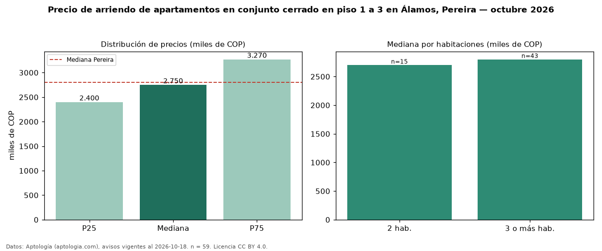

Precio de arriendo de apartamentos en conjunto cerrado en piso 1 a 3 en Álamos, Pereira — octubre 2026
Con 59 avisos vigentes, el canon mediano de apartamentos en conjunto cerrado en piso 1 a 3 en arriendo en Álamos, Pereira es COP 2,75 millones al mes. Prácticamente coincide con la mediana de los apartamentos en conjunto cerrado en arriendo de Álamos (COP 2,75 millones, n = 166); este segmento reúne el 36 % de esos avisos. Por metro cuadrado, la mediana es COP 31.915/m² al mes (n = 57), 1 % por debajo de los apartamentos en conjunto cerrado en arriendo de Álamos (COP 32.143/m²). El área mediana anunciada es 90 m². El segmento con más oferta es el de 3 o más habitaciones (43 avisos, mediana COP 2,80 millones); pasar de 2 habitaciones a 3 o más habitaciones cambia la mediana +4 %. La administración mediana declarada es COP 531.500 al mes (n = 56), aparte del canon. El estrato más frecuente es 6 (90 % de los avisos con estrato). La mediana de todos los apartamentos en arriendo de Pereira es COP 2,80 millones (−2 % de diferencia). Datos: Aptología (aptologia.com), CC BY 4.0 — https://www.aptologia.com/arriendo/pereira/alamos. Archivos: PDF, CSV con las cifras y gráfica PNG.

| Avisos únicos | 59 |
|---|---|
| Percentil 25 | COP 2.400.000 |
| Mediana | COP 2.750.000 |
| Percentil 75 | COP 3.270.000 |
| Mediana por m² | COP 31.914 |
Fuente: avisos vigentes de portales inmobiliarios recopilados por Aptología, deduplicados (mínimo 30 avisos únicos por celda). Precios pedidos, no cerrados. Fecha: 2026-10-18.